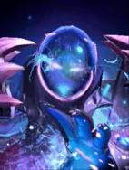
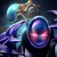

Tempest Double
Battle Cry Ability: Activates before the battle starts
Briefly refocusing its fractured elements into a single form, the Arc Warden creates a perfect electrical duplication of itself.
| ★ | ★★ | ★★★ | |
|---|---|---|---|
| DUPLICATE DURATION | 10 | 20 | 30 |
- The duplicate gains all benefits from Arc Wardens current items, but cannot duplicate again.
Warped by the power of its peers, Arc Warden becomes what it despises most: disharmony.
Stats
| ★ | ★★ | ★★★ | |
|---|---|---|---|
| Health | 900 | 1700 | 3400 |
| Mana | 0 | 0 | 0 |
| Armor | 7 | 7 | 7 |
| Magic resistance | 0% | 0% | 0% |
| Attack damage | 90–150 | 180–300 | 360–600 |
| Attack interval (s) | 1 | 1.1 | 1.1 |
| Attack range | 600 | 600 | 600 |
| Move speed | 500 | 500 | 500 |
 Kobold · Divided we stand
Kobold · Divided we stand
- (2) At battle start, each group of identical pieces on your board with an even count summons one extra copy of that piece for the battle. The copy has no items. This works for any piece, not just Kobolds.
- (4) Each unpaired Kobold copies a random unpaired non-Kobold ally of the same star. The Kobold turns into that piece (frozen in wax for 4-6s, expires after 15-20s), and an extra copy of that ally is also summoned. Each ally can only be copied once.
 Shaman · Hex
Shaman · Hex
Shamans cast their skill with 75% of the normal mana.
- (3) After casting its skill or using an active item, a Shaman spends about 1.25s transforming into a random piece 2 levels higher (capped by your courier level and at 9). The new form has no items (your items are kept safe) and dies after 20-25 seconds.
- (6) The transformed piece keeps its items, but each one becomes a random item 2 tiers higher.